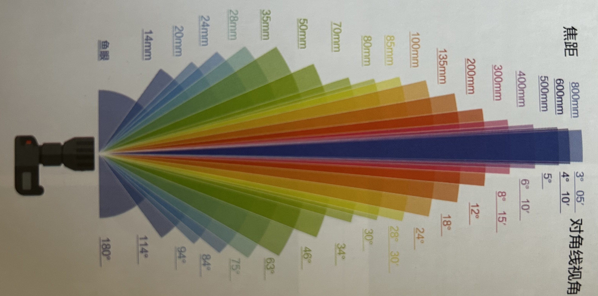
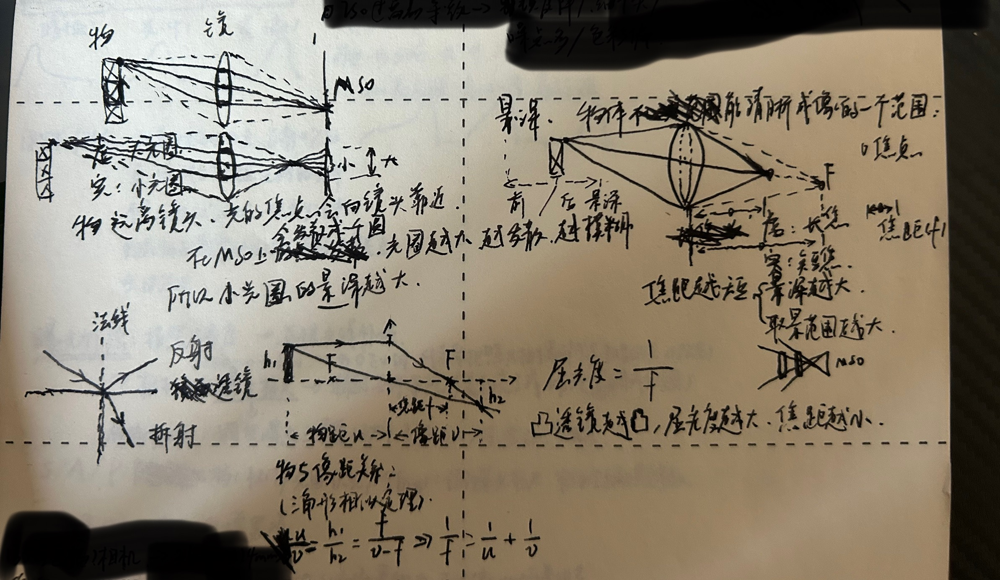
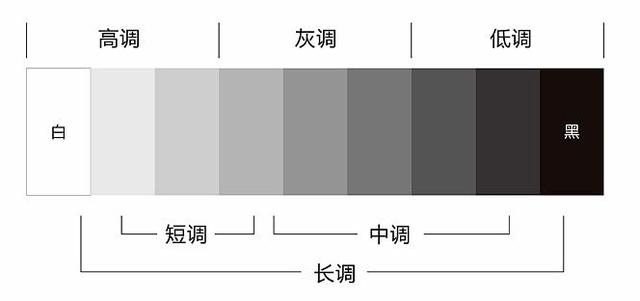
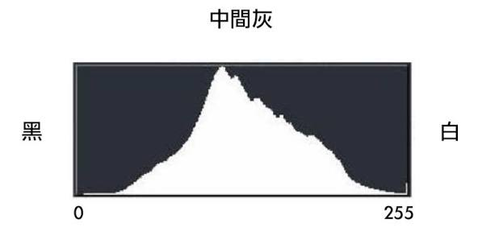
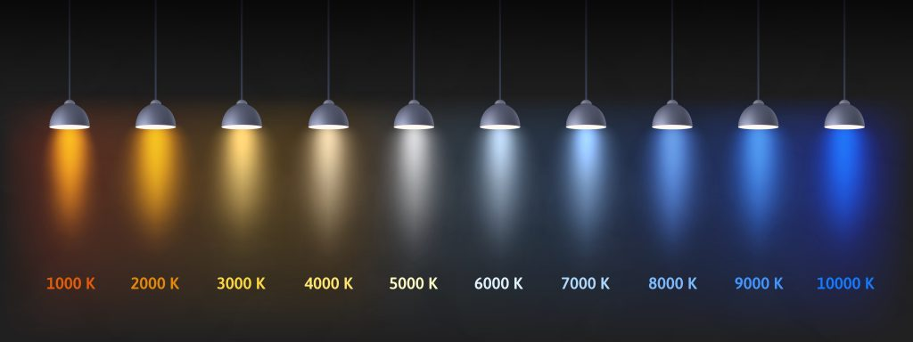

《新摄影笔记》一书阅读的笔记
取景
焦距
相机镜头主要参数之一，用于决定我们的视角，即确定取景范围。焦距越短，取景范围越大。

!焦段
- 广角镜头：35mm及以下
- 一般广角：35mm（“人文眼”，适合拍摄人文题材，表达主体与背景环境的关系）
- 标准广角：24mm ~ 28mm（适合拍摄风景）
- 超广角：24mm以下（适合拍摄大场景，或在狭小空间内部拍摄，把小空间拍大）
- 标准镜头：50mm（适合拍摄人像照片，照片透视类似人眼）
- 人像镜头：85mm（适合拍摄模特）
- 长焦镜头：200mm ~ 300mm（摄远镜头，适合拍摄鸟类、荷花、运动的物体等远处的景物）
- 超长焦镜头：300mm以上（适合拍摄动物、日出日落等特写）
等效焦距
等效35mm焦距：因以35mm宽的、两边打孔的胶片作底片的相机风靡，而成为相机标准。35mm的胶片实际尺寸为36mm * 24mm（3：2的比例），这个尺寸即135全画幅或者35mm全画幅。
常见画幅尺寸
| 画幅类型 | 传感器尺寸（mm） | 焦距转换系数 |
|---|---|---|
| 中画幅 | 44×33 53.7×40.4 |
0.79 0.64 |
| 全画幅 | 36×24 | 1 |
| APS-C画幅 (半画幅) | 22.3×14.9(Canon) 23.5×15.6(Sony/Nikon/Fuji) |
1.6 1.5 |
| M4/3画幅 | 17.3×13.0 | 2 |
| 1英寸 | 13.2×8.8 | 2.7 |
将其他画幅焦距转换为等效35mm焦距的计算公式为：
物理焦距 * 焦距转换系数 = 等效35mm焦距 |
比如：APS-C(Sony)50mm镜头 × 1.5 = 75mm（等效35mm视角）。
透视
即“近大远小”。照片的空间感和纵深感，拍摄距离越近，透视效果越明显；越远，则越不明显。
如：鸟为什么那么大？
景深
相机对焦点（焦平面）前后成像清晰的纵深范围。
影响景深的三个要素：
- 焦距：焦距越短，景深越大。
- 光圈：光圈越小，景深越小。
- 拍摄距离：拍摄距离越近，景深越小。

如何取景
- 范围：镜头焦距，拍摄距离，拍摄哪些景物。
- 角度：如仰拍显腿长，俯拍显脸小，镜头放置在合适位置遮蔽不好看的杂物。
- 时机：好场景+合适元素，如夕阳下的归雁，捕捉运动的物可以直接连拍。
拍摄时常遇到的七个问题：景色是否好看，主体是否在状态，拍摄角度是否正确，画面是否有主体，取景范围是否合适，前景是否必要，背景是否凌乱。
曝光
影调
可理解为照片的明暗程度。明亮为高调，昏暗为低调，不明不暗为中间调，大部分照片都为中间调。
影调按整体明暗程度可以分成三个调：高调、中调、低调。按明暗反差/范围也可以分成：长调、中调、短调。因此又可以细分成九个调，如高长调、高中调、高短调等。

理解中间调，就要了解18%灰概念：纯黑完全吸收光，反射0%的光，而纯黑与纯白之间的灰并不是反射50%的光，现实中物品的反射率约为18%，所以中间亮度即为18%灰。
可以通过直方图判断影调，直方图统计图像中从最暗（黑色）到最亮（白色）的像素分布情况，横轴上表示亮度级别（通常从0-255，左暗右亮），纵轴表示该亮度级别下像素的个数或比例。

比如上图就是一个中长调。
曝光补偿
用来量化照片明亮程度的参数，可以使用它修正相机自动测光的偏差。需要记住，曝光补偿不是光线补偿！
可以调节相机上的曝光标尺（-3Ev~3Ev）来拍摄想要亮度的照片。相机默认遵从18%灰原则，曝光标尺为0Ev时，即代表要把照片拍的不亮不暗的灰。
相机主要有四个挡位：
- M（手动）：可手动调整曝光三要素（光圈、快门、ISO）控制曝光补偿。适合长时间曝光或闪光灯拍摄等特殊场景。
- S（快门优先）：可手动设置快门，相机根据曝光补偿自动计算光圈。适合拍摄运动物体，高速定格，低速动感。
- A（光圈优先）：可手动设置光圈，相机根据曝光补偿自动计算快门。适合拍摄对景深有要求的照片，如人像大光圈虚化，风景小光圈清晰。
- P（程序自动）：相机自动设置快门和光圈，可手动设置ISO。
曝光补偿使用应遵循原则：“白增黑减”。
如拍摄雪白场景时，相机测光系统不会认为当前场景很白，而会误认为当前场景很亮，若仍使用默认0Ev（18%灰）的曝光补偿，则会拍成不亮不暗的灰色场景，导致环境不够白，欠曝了，故需要“白增”来修正。“黑减”同理。
曝光三要素
即光圈、快门、ISO（感光度），它们共同决定一张照片的亮度，即通过它们可以得到想要的爆光补偿。
光圈
相机镜头的主要参数之一，指镜头里一个可变大变小的孔，它决定了通光速率，同时它也会影响照片的虚化效果。
决定通光速率
光圈值是镜头焦距与光圈直径的比值（故光圈值越大，光圈越小），一般用F表示，如F1、F1.4、F2、F2.8、F4、F5.6等。
光圈值挡位之间是1.4倍（√2倍）的关系，所以光圈调大一档，光圈面积增大为原来的2倍，通光率也是2倍。可以简单理解为改变一档光圈，照片亮度增加一倍或降低一半。
光圈大小划分：
- 大光圈：>= F2.8（如F1、F1.4、F2、F2.8），可以突出主体，虚化背景，适合人像拍摄。
- 小光圈：<= F8（如F8、F11、F16…），兼顾锐度和景深，确保前景和背景清晰，适合风光摄影。
影响虚化效果
光圈越大，景深越浅，虚化效果越好；光圈越小，景深越深，虚化效果越差。
- 小光圈（F11左右）能出星芒效果。星芒瓣数与光圈叶片片数有关（奇为2倍，偶为相同）。
涉及原理：光的衍射现象，即光在传播过程中遇到障碍物或狭缝时，会偏离直线传播轨迹，绕过障碍物边缘继续传播。
- 大光圈可以让前景消失。如贴在铁网前拍远景，可能会将铁网虚化不见。
- 小光圈可以使镜头污渍更明显。
- 大光圈+带形状洞的卡片可以排除相应形状的光斑（必须保证洞比光圈孔小）。
快门速度
快门速度对应曝光时间，快门速度越快，曝光时间越短。
常用快门速度有2s、1s、1/2s、1/4s、1/8s、1/15s、1/30s、1/60s、1/125s、1/250s、1/500s、1/1000s等，快门速度挡位之间是2倍的关系。一般来说慢速快门<=1/60s，高速快门>=1/250s。
安全快门则是手持拍摄时保证画面清晰不抖动的最低快门速度，经验公式为：安全快门 = 1 / 等效焦距。如50mm镜头用1/50秒或更快，200mm镜头用1/200秒或更快。
ISO（感光度）
指感光元件对光线的敏感程度，ISO数值越高，传感器对光线越敏感，画面越亮。一般常见的ISO值有50、100、200、400、800等，挡位之间也是2倍关系，即每提高一挡ISO，达到同样影调的曝光量只需要之前的一半。
但是过高的ISO的可能会导致画质下降：首先可能出现“锐度下降”和“细节损失”，然后“噪点增加”，最后“色彩偏移”。
互易律
光圈、快门、ISO共同作用决定曝光补偿，将三要素中的1个或2个参数调节共n挡，再将另外2个或1个参数向相反的方向调节共n挡，则曝光补偿不变。
假设F8、1/60s、ISO 1600时，曝光补偿为0Ev。 |
如何正确曝光
主观感受
拍摄时根据个人经验或感受决定曝光。
直方图
前文提到过直方图统计图像中从最暗（黑色）到最亮（白色）的像素分布情况，横轴上表示亮度级别（通常从0-255，左暗右亮），纵轴表示该亮度级别下像素的个数或比例。
可以参考直方图控制曝光：
- 想拍中间调的照片，大部分像素应该都集中在中间，即直方图曲线应该中间高，两边低。
- 高调，大部分像素在右边，即直方图曲线右边高。
- 低调，大部分像素在左边，即直方图曲线左边高。
- 强反差，大部分像素在两边，即直方图曲线两边高，中间低。
过曝或欠曝
- 宁过勿欠：过曝也不要欠曝，以直方图为参考，尽量“向右曝光”
- 核心理念：追求最佳信噪比（更好的画质和细节）。
- 适用场景：数码RAW格式拍摄（raw有强大后期空间）、低光环境、星空拍摄、风光摄影等。
- 缺点：风险较大，如果没有把握好“度”，导致高光溢出（死白），会废片。
- 宁欠勿过：欠曝也不要过曝，以直方图为参考，尽量“向左曝光”。
- 核心理念：保护高光细节。
- 适用场景：JPEG格式拍摄、光线反差极大（大光比）的场景、追求深沉压抑氛围等。
- 缺点：欠曝严重时，后期提亮暗部会产生大量噪点，且色彩分离，导致画质粗糙。
HDR
高动态范围（High Dynamic Range，HDR）成像技术，适用于在大光比、高反差的环境中拍出好照片。它的原理是拍摄几张曝光不同的照片，把亮部（欠曝拍摄）和暗部（过曝拍摄）都照顾到，最后合成一张。
光线
光线的方向
可以按方向将光分成三种：
- 顺光：光线从照相机后面直接照射到被摄体，主体直接受光。
- 特点：被摄体色彩、形态鲜明、清晰、立体感较弱、阴影少。
- 侧光：光线从被摄体的一侧照射过来，与照相机轴线呈45°~90°，又可细划分为前侧光（斜侧光）、正侧光和后侧光。
- 特点：阴影明显，亮暗对比强烈，能增加场景的画面层次感和立体感。
- 逆光：光源位于被摄体正后方，光线朝向照相机。
- 特点：主体轮廓感极强，形成轮廓光或剪影；高光比（主体较暗、背景较亮），由于光线直射镜头，易造成画面冲光。
色温
衡量光源颜色的物理量，单位为K（开尔文）。它的定义是将一理想黑体加热，当其辐射的光色与光源一致时，此时黑体的绝对温度即为该光源的色温。

蓝白为冷色，色温高；红黄为暖色，色温低。即色温越高，光色越冷；色温越低，光色越暖。
常见色温：烛光（1800K）、日出日落（2500K）、白色荧光灯（4500K）、烈日当空（5300K）、阴天（6500K）、晴空万里的蓝天（10000K）。
白平衡
将不同色温环境中的白色物体还原成真实白色的功能。
- 白平衡 = 色温，画面为原本真实色彩。
- 白平衡 > 色温，画面偏黄（偏暖）。
- 白平衡 < 色温，画面偏蓝（偏冷）。
光线的分类
自然光
户外遇到的光线，主要是日光。
场景光
室内遇到的光线，包括从窗户照进的日光，室内灯光。
人造光
拍摄过程中可以随意控制的人造光源，一般指布光灯、闪光灯和反光板带来的光源。
闪光指数
是衡量闪光灯功率大小的标准，通常用GN值表示，可用于计算手动闪光拍摄时的光圈和有效距离。
闪光灯指数与光圈（f）和拍摄距离（d）关系如下：
GN = f × d（前提条件通常是：ISO 100，满功率） |
通过上面的公式，可以反向求光圈或拍摄距离：
- 求光圈：f = GN / d
- 求拍摄距离：d = GN / f
比如某闪光灯标注GN=40(ISO 100)，若被摄体距离10米,则需使用光圈F4（40 / 10 = 4）；若使用光圈F8，则有效拍摄距离为5米（40 / 8 = 5）。
布光
灯位：正面光、顶光、“鬼光”、45°侧光、90°侧光、背景光。
布光法：如伦勃朗布光法、蝴蝶布光法。
虚实
对焦与景深
焦平面
是一个面，面上所有内容都是清晰的。
景深
是相机对焦点（焦平面）前后成像清晰的纵深范围。
- 与光圈、焦距和拍摄距离有关。光圈越大，焦距越长，拍摄距离越近，景深越短。
- 前景深比后景深短，且随着参数变化，后景深的变化比前景深快得多。
对焦
是确定一个焦点，保证焦平面前后景深中的景物是清晰的或想要的效果。需保证拍摄距离大于镜头最近对焦距离。
对焦模式：
- MF（手动对焦）==> 适用五反差的景（白墙或很暗的景）；高速无规则运动的物；微距题材。
- AF-S（单次自动对焦）：一次半按快门仅对焦一次。
- AF-C（连续自动对焦）：半按快门期间会不停对焦。
常见焦点选择模式：单点对焦、扩展对焦、区域对焦、追踪/眼部追踪对焦。
通过景深实现虚化
- 背景远
- 相机近
- 光圈大
- 焦距长
快门控制虚实
相机（焦平面快门）曝光时，通常是前帘先打开、后帘再关闭。相机快门有一个时刻能全部都打开的最高快门速度（如1/125s、1/250s，因相机而异），即最高闪光同步速度。低于此速度时，前帘完全打开，使整个感光元件都受光，待曝光时间结束后，后帘再开始关闭。高于该速度时，后帘会在前帘尚未完全打开时就开始追上来，两帘之间始终只留一条窄缝从一侧扫到另一侧。
闪光同步：指闪光灯一次闪光瞬间与相机快门完全开启瞬间保持一致的技术，适用室内拍摄，夜晚布光，需要最大闪光功率。
高速闪光同步（HHS）:指突破最高同步速度限制，利用频闪实现高速快门（如1/8000s）拍摄，适合白天大光圈补光，但闪光功率会随快门变快而下降。
高速快门凝固瞬间
拍摄高速运动的物体，使用高速快门（短曝光时间）来凝固主体的瞬间动作。
慢速快门记录时间段
使用慢速快门将画面中物体动态记录下来。
前帘闪光同步与后帘闪光同步
使用闪光灯+慢门，拍摄动态效果时，应使用后帘闪光同步。
- 前帘闪光同步：快门刚开始曝光、前帘打开后就立刻闪光。闪光把主体在曝光一开始那一刻定格，之后剩余曝光时间里，环境光继续记录主体的运动，形成拖影。拖影在前，不自然。
- 后帘闪光同步：曝光快结束、后帘合上前的瞬间闪光。先用较长曝光让环境光把运动记录成拖影，最后用闪光把主体在曝光结束那一刻定格。拖影在后，更自然。
- 前帘闪光同步是相机默认设置，适用于快门速度较快（如1/60s甚至更快）拍摄普通定格画面，此时环境光拖影较少；后帘闪光同步适合用慢门拍摄出带有动感的画面。
构图
构图法
- 居中构图
- 三分构图
- 重复构图
- 引导线构图
- 三角构图
- 框架构图
- 对称构图
构图失败的常见问题
- 太小主体居中
- 水平线、地平线居中（好看的部分应该占主体）
- 该水平的线不水平
- 前面空间小，后面空间大（如三分构图将人物放在右边，人又是面向右侧，会显得“堵”、压抑）
- 把人拍的太矮（如半身人像的头部放在中线及其之下会显得矮）
- “切人”的位置不对（如画面裁切到关节、水平线切头）
- 脑袋上“长东西”（如人物头上长树、电线杆）